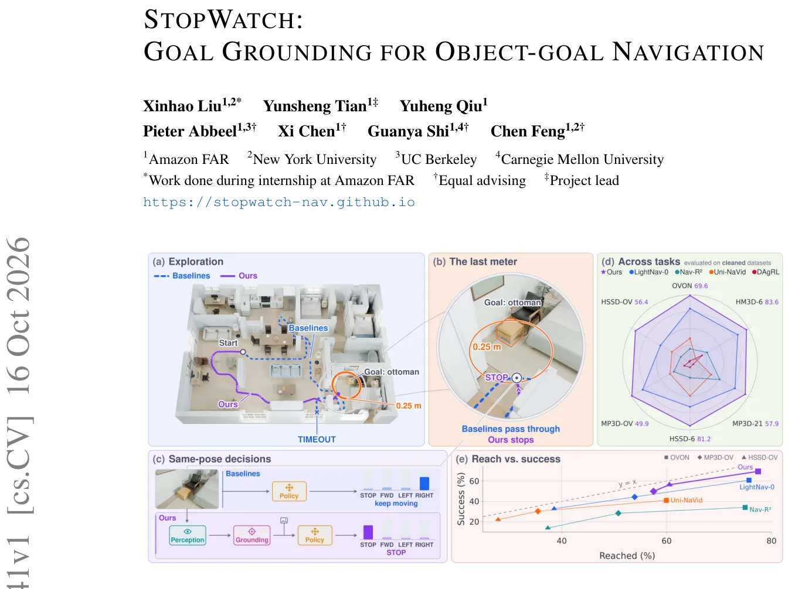
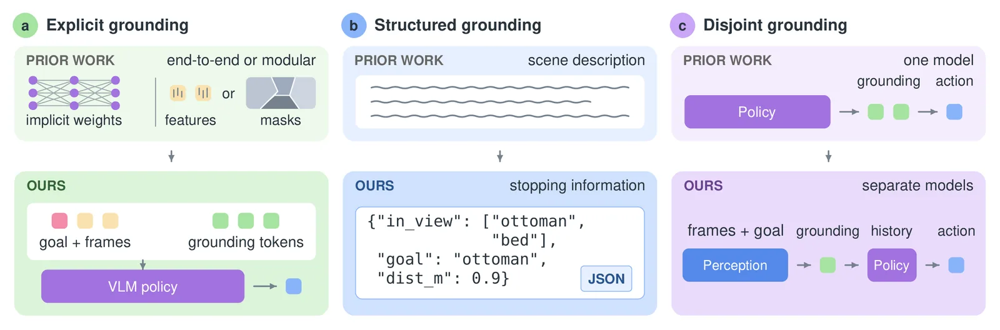
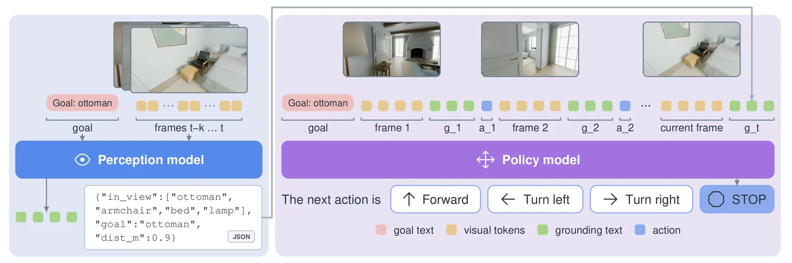
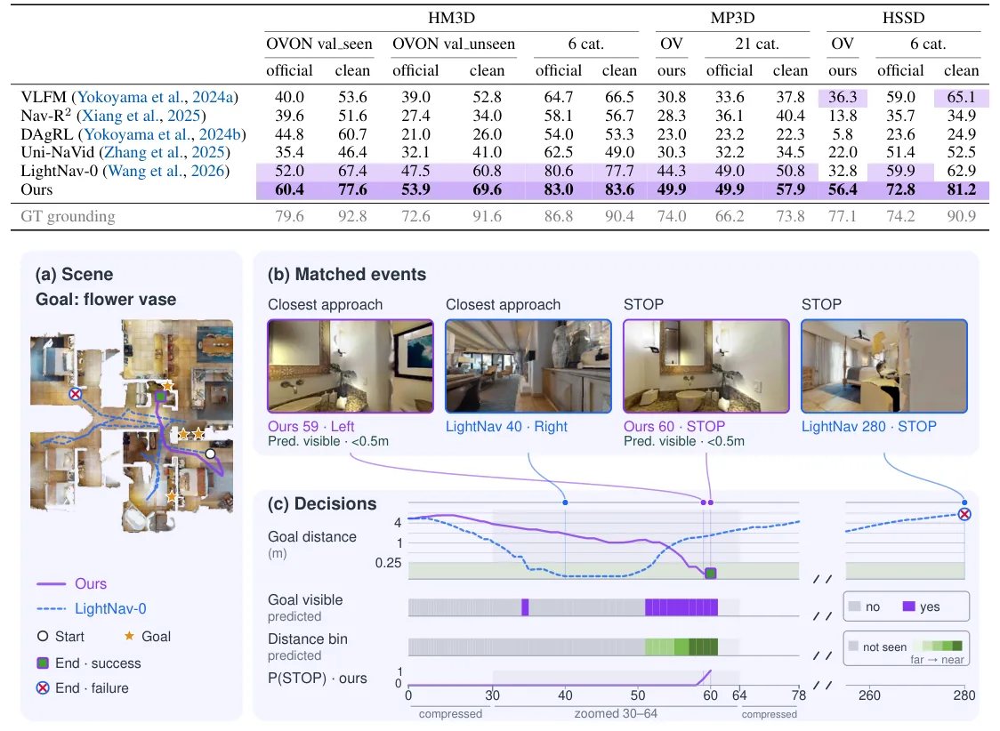

O paradoxo da navegação por objetos
Na navegação por objetos (Object-Goal Navigation), um agente robótico ou virtual deve encontrar uma instância de uma categoria de objeto nomeada (como "vaso de flores" ou "cadeira") em um ambiente novo, sem um mapa prévio. Nos últimos anos, a comunidade de Visão Computacional tem adotado uma receita comum: pegar Modelos de Visão e Linguagem (VLMs) pré-treinados em escala web, que possuem vasto conhecimento semântico, e ajustá-los (fine-tuning) usando demonstrações de especialistas para criar uma política de navegação.
Apesar do progresso, as taxas de sucesso permanecem decepcionantemente baixas, especialmente quando o agente enfrenta categorias de objetos nunca vistas antes (open-vocabulary). Escalar o tamanho dos conjuntos de dados de treinamento ou melhorar o modelamento da história de observações tem trazido retornos decrescentes. Muitos pesquisadores observaram que a percepção e o "ancoramento" (grounding) — a capacidade de saber onde o objetivo está no espaço visual — são os verdadeiros limitadores, mas faltava um diagnóstico preciso do que exatamente esses agentes estavam falhando em fazer.
Diagnóstico: O problema não é chegar, é parar
O paper StopWatch, de pesquisadores da Amazon FAR, NYU, UC Berkeley e CMU, oferece esse diagnóstico crucial. Ao analisar políticas de navegação finas-tuned, os autores descobriram que os agentes exploram bem e, frequentemente, chegam muito perto do objetivo. O problema dominante é a "ancoragem do objetivo" (goal grounding): a incapacidade do agente de perceber que o objetivo já está à vista ou de estimar corretamente a distância até ele.
Os dados são reveladores. Em 76% dos episódios, uma política end-to-end conseguia chegar a menos de 0,25 metros do objetivo, mas tinha uma taxa de sucesso de apenas 52%. Isso significa que o agente passava pelo alvo ou parava antes, sem reconhecer que havia cumprido a tarefa. Em contraste, quando a mesma política recebia como entrada a ancoragem do objetivo verdadeira (ground-truth), sua taxa de sucesso saltava para 89%. A conclusão é direta: parar no lugar certo é mais difícil do que chegar lá. A falha não está na capacidade de navegação, mas na percepção espacial do objetivo.

A solução: Ancoragem explícita via pipeline de dois modelos
Para corrigir essa falha, os autores propõem tornar a ancoragem do objetivo explícita. Em vez de confiar que o modelo aprenda implicitamente a detectar o objetivo a partir de pixels brutos, eles inserem uma descrição textual estruturada que informa ao agente quais objetos estão visíveis e quão distante o objetivo é. Essa abordagem é análoga ao "chain-of-thought" (cadeia de pensamento) usado em modelos de linguagem, mas aqui é derivada de rótulos semânticos e geométricos, não de raciocínio livre sujeito a ruído.
A arquitetura proposta é um pipeline de dois modelos separados, treinados de forma distinta. O primeiro é um modelo de percepção, finas-tuned a partir do Qwen3-VL-4B, cuja tarefa é analisar a imagem RGB atual e gerar o texto de ancoragem. O segundo é um modelo de política, finas-tuned a partir do Qwen3-VL-2B, que recebe a imagem e o texto gerado pelo primeiro modelo para decidir a próxima ação (mover, girar, parar). Ambos os modelos são treinados usando o mesmo texto de ancoragem extraído das anotações das cenas de treinamento, sem custo adicional de rotulagem.

Detalhes do pipeline e treinamento
O texto de ancoragem segue um formato específico que inclui a visibilidade do objetivo e a distância em faixas (ex: "visible: yes", "distance: <0.5m"). Durante o treinamento, o modelo de percepção é otimizado para prever esse texto corretamente para cada frame das demonstrações. O modelo de política é otimizado para escolher ações que maximizem o sucesso, condicionado a esse texto preciso. A separação é intencional: os autores experimentaram treinar um único modelo end-to-end para prever a ancoragem e a ação simultaneamente, mas os resultados foram inferiores, sugerindo que a tarefa de percepção fina requer foco dedicado.
Os modelos foram treinados em um corpus massivo de 3,1 milhões de demonstrações (250 milhões de frames) provenientes de 145 cenas do HM3D-OVON, 61 do MP3D e 123 do HSSD. Nenhuma cena de avaliação foi usada no treinamento. A ideia é que, ao testar, o modelo de percepção deve prever a ancoragem a partir de observações reais, criando uma interface textual clara entre o que o agente "vê" e o que ele "faz".

Corrigindo os benchmarks: O que é "limpo"?
Uma contribuição crítica do paper é a revisão das anotações dos benchmarks existentes. Os autores identificaram defeitos nas anotações originais que levavam a avaliações injustas ou imprecisas. Por exemplo, em alguns casos, o objetivo era marcado em posições onde não era visível ou acessível, ou onde a definição de "sucesso" era ambígua. Eles criaram um protocolo de "avaliação limpa" (clean protocol), onde apenas episódios que passam por uma auditoria rigorosa são considerados.
Essa correção é vital porque muitos métodos anteriores podiam parecer bons em benchmarks sujos, mas falhavam em cenários realistas. O paper reporta resultados sob dois protocolos: o "oficial" (usando os critérios originais do benchmark) e o "limpo" (usando os critérios corrigidos nos subconjuntos auditados). A maioria das comparações significativas ocorre no protocolo limpo, onde a diferença entre chegar perto e parar no local exato se torna o fator determinante para o sucesso.

Resultados: Estado da arte em seis benchmarks
O sistema StopWatch atinge o estado da arte (SOTA) em seis benchmarks de navegação por objetos, abrangendo coleções de cenas HM3D, MP3D e HSSD, tanto em tarefas de vocabulário aberto quanto fechado. Os ganhos são substanciais. No HM3D-OVON val unseen, com anotações corrigidas, o método supera o melhor baseline em 8,8 pontos percentuais de taxa de sucesso.
Em MP3D-OV, o StopWatch alcança 83,6% de sucesso, contra 77,7% do LightNav-0. No HSSD-OV, a taxa é de 81,2%, contra 62,9% do LightNav-0. Esses resultados não são marginais; eles representam uma melhoria consistente em diferentes domínios de simulação e configurações de tarefa. A tabela de resultados mostra que, em todos os benchmarks, o método proposto lidera sob ambos os protocolos de avaliação, mas a vantagem é mais pronunciada e confiável no protocolo limpo.
Análise: Percepção vs. Política
Um ponto interessante da análise é o desempenho do modelo de política quando alimentado com ancoragem de objetivo verdadeira (GT grounding). Quando a política recebe o texto perfeito sobre a localização do objetivo, sua taxa de sucesso se aproxima da de um especialista humano que gerou as demonstrações. Isso reforça a tese central do paper: a política de navegação em si é robusta e capaz de aprender a explorar eficientemente. O gargalo principal está na percepção, especificamente na capacidade de estimar a visibilidade e a distância do objetivo.
Isso tem implicações importantes para o futuro da área. Em vez de focar apenas em aumentar a capacidade de raciocínio espacial dos modelos end-to-end, a comunidade deve investir em melhorar a precisão da percepção semântica e geométrica. O pipeline de dois modelos proposto oferece uma arquitetura modular que facilita esse foco, permitindo que pesquisadores melhorem o modelo de percepção sem re-treinar toda a política de navegação.
Limitações e escopo
O paper reconhece limitações. O sistema foi avaliado principalmente em ambientes simulados (HM3D, MP3D, HSSD). A generalização para o mundo real, com ruído sensorial, iluminação variável e dinâmicas não modeladas, ainda precisa ser demonstrada. Além disso, a abordagem depende da disponibilidade de anotações semânticas e geométricas precisas durante o treinamento. Embora essas anotações sejam extraídas das cenas de treinamento, a qualidade do pipeline de percepção no teste depende da fidelidade dessas anotações em relação à realidade do ambiente.
Outra limitação é a complexidade computacional. Manter dois modelos grandes (Qwen3-VL-4B e Qwen3-VL-2B) em execução, com inferência sequencial (percepção seguida de política), pode ser mais lento e custoso do que um único modelo end-to-end. Para aplicações em tempo real com restrições de hardware, essa sobrecarga pode ser um obstáculo.
Conclusão: Um passo concreto para a navegação
StopWatch faz uma contribuição valiosa ao reduzir um problema complexo de navegação por objetos a um problema de percepção mais concreto: a ancoragem do objetivo. Ao tornar essa ancoragem explícita através de um pipeline de dois modelos, os autores não apenas alcançam o estado da arte, mas também oferecem um diagnóstico claro para a comunidade. A mensagem é que, para avançar, precisamos parar de tratar a navegação como um problema puramente de planejamento e começar a investir em percepções espaciais precisas e interpretáveis.
A correção dos benchmarks também é um serviço à comunidade, estabelecendo um padrão mais rigoroso para futuras avaliações. Enquanto muitos métodos continuam a buscar ganhos marginais em métricas infladas, o StopWatch mostra que resolver o problema fundamental de "parar no lugar certo" pode trazer avanços significativos e mensuráveis. Para desenvolvedores e cientistas de dados trabalhando com navegação embodied, o paper sugere que a modularidade e a explícitação das etapas de percepção podem ser tão importantes quanto a escala dos modelos.
O que fica
- Agentes de navegação por objetos frequentemente chegam perto do alvo, mas falham em parar, pois não estimam a distância ou visibilidade do objetivo.
- A solução é um pipeline de dois modelos: um de percepção gera texto estruturado sobre o objetivo, e um de política usa esse texto para decidir ações.
- Os autores corrigiram defeitos de anotação em benchmarks populares, revelando que o gargalo real é a percepção, não o aprendizado da política.
- O método alcança estado da arte em seis benchmarks, mostrando que tornar a ancoragem do objetivo explícita é mais eficaz que modelos end-to-end.
Paper original: StopWatch: Goal Grounding for Object-goal Navigation
Comentários
Nenhum comentário ainda. Seja o primeiro.